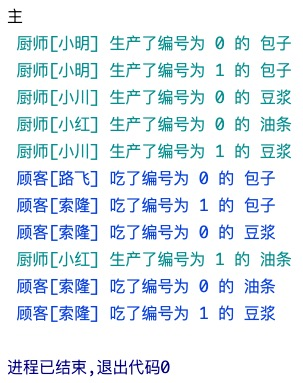
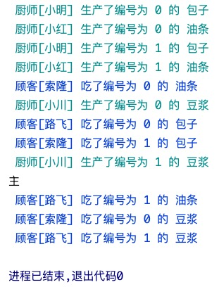

生产者消费者模型!!
生产者消费者模型敲重要!逢考必问!!!
概念¶
Q1: 什么是生产者消费者模型?
生产者: 比喻的是程序中 负责产生数据 的任务
消费者: 比喻的是程序中 负责处理数据 的任务
生产者 --> 共享的介质 (通常是队列) <-- 消费者
Q2: 为何要用生产者消费者模型?
实现了生产者与消费者的 解耦合 , 生产者可以不停的生产,消费者也可以不停的消费!
平衡了生产者的生产能力与消费者的消费能力,它俩不挨着,都跟共享的介质打交道, 提升了程序整体的运行效率!
Q3: 什么时候用?
当我们的程序中存在明显的两类任务,一类负责产生数据,一类负责处理数据..
此时就应该考虑使用生产者消费者模型来提升程序的效率!
比如:写爬虫程序就会用到生产者消费者模型.
造数据 -- 程序中的任务A模拟浏览器下载数据的过程.
共享介质 -- 将下载下来的数据放到队列里面不合适,应该放消息."我有个东西下载好了,在哪个位置,你应该去处理!"
处理数据 -- 程序中的任务B到队列中取消息.到指定的位置把数据拿过来做处理即可.
上述的实现生产者、消费者、共享介质都在一台机器上!
一台机器的性能是有极限的、稳定性不高(硬盘、内存坏了,生产者消费者模型就崩了!)
So,我们在公司的生产环境当中.
为了提高我们程序的[运行效率]和[稳定性],不应该将程序的所有组件运行在同一台机器上!
eg,一台高性能机器能运行一万个生产者吗?不能,100台普通性能的机器就可以,每台机器承担100个生产者就行.
消费者同理!我们将生产/消费分散出去,性能提升了,一台机器承担的压力分到了100台上.
若我们使劲提升一台机器的性能让它能运行一万个生产者呢？
使劲添加硬件,一台机器的性能总归也是有极限的 -- 垂直扩展 - 集中式
找一堆普通的计算机,拼到一块达到我想要的性能 -- 水平扩张 - 分布式
分布式性能稳定性都提升了,单独坏某一两台机器,不影响程序运行.
生产者消费者分散出去了,应该整合到一起!
这个共享介质(队列)应该是一个基于网络通信的队列!!(此队列是一个套接字软件!)
生产者生产完后往这个队列里发消息,消费者再基于网络从这个队列里拿走消息,到指定地址取数据进行处理!
再次强调！生产者不应该把生产完的数据发到队列里面去！只用发一个消息即可！
要知道,生产者消费者模型不仅限于应用在一台机器之上!! 还可以分布式的应用在多台机器上!
生产包子¶
效率极低的程序¶
可通过生产者消费者模型解决该问题!!
为何说下方生产包子和吃包子的程序效率极低?
因为生产包子的时候不能吃包子,吃包子的时候不能生存包子!
从生产者角度来说,生产者必须等消费者吃完包子后才能重新投入生产!
生产者在消费者吃包子的时候是具备生产能力的!生产者的生产能力被无情浪费掉啦.
从消费者的角度来说,同理.
该程序中生产者和消费者(强耦合)到了一起!
def producer():
for i in range(10):
print(f"正在生产编号为{i}的包子!")
producer(i)
def consumer(number):
print(f"正在吃编号为{number}的包子!")
producer()
生产者和消费者¶
基于 队列 实现生产者消费者模型! 注意,该处程序中只涉及一个生产者和一个消费者!
代码实现¶
import os
import random
import time
from multiprocessing import Queue, Process, set_start_method
def producer(q):
for i in range(5):
res = "编号为 %s 的包子" % i
time.sleep(random.randint(1, 3)) # -- 模拟厨师生产一个包子的时间
q.put(res) # -- 往队列里丢
# -- \033[36m...\033[0m 设置终端打印的字体颜色
print("\033[36m [%s]号厨师生产了%s \033[0m" % (os.getpid(), res))
def consumer(q):
while True:
res = q.get() # -- 从队列里取走
time.sleep(random.randint(1, 3)) # -- 模拟顾客吃一个包子的时间
print('\033[34m [%s]号顾客吃了%s \033[0m' % (os.getpid(), res))
if __name__ == '__main__':
set_start_method('fork') # -- mac上运行需要加这一句
q = Queue()
# -- 生产者
p1 = Process(target=producer, args=(q,))
# -- 消费者
c1 = Process(target=consumer, args=(q,))
p1.start()
c1.start()
print("主")
在上述程序中,我们制造了两个进程,生产者p1和消费者c1..
p1将生产的包子丢到队列q中,c1从队列q中取出包子来吃.. 这两个操作是并发执行的!!
p1生产一个包子的时间看心情,心情好1s,心情不好3秒.. 消费者吃包子同理.
所以打印出的结果中,厨师先生产了编号为0,1的包子,顾客才吃完编号为1的包子! 侧面也说明了是并发执行的!

问题分析¶
分析程序为啥没有退出
那程序运行结果为啥最后会阻塞住呢?
我们来分析,父进程打印了"主",证明 父进程的活是干完了的,但没有结束,问题就在于有 非守护的子进程 还没有结束. 再看两个子进程的代码.. 两个子进程都是非守护的. p1生产完5个包子后,活干完了.变成了僵尸进程; c1的代码里有 while True 语句,会不断的从队列中 q.get() 取包子!!
但q队列中只有5个包子,取完了,队列为空,就阻塞住了!! 会一直卡在 q.get() 这一步.
生产者生产完了,消费者也消费完了,应该退出程序! 如何解决呢?
也许你会想,给c1从队列中取数据的get方法设置参数, res = q.get(block=True,timeout=4) ... 能解决是因为我们这里模拟的时间延迟最高是3秒,真实场景中时间是不能预测的,把timeout的值设置大一些,设置为10000？这..你试试,试试就逝世.这不是正常解决问题的思路. 那将timeout设置小一点 res = q.get(block=True,timeout=1) ,再捕捉异常?不合理啊,万一这个包子正在生产过程中,需要生产3秒呢?
解决方案¶
正确的解决方案如下:
思考方向 -- 往队列中再发一个结束信号 (eg: None), 这样消费者在接收到结束信号后就可以break出死循环!
生产者p1和父进程都能发结束信号:
1> 让生产者在生产完毕后,往队列中再发一个结束信号
2> 主进程等生产者结束后往队列中发送结束信号
这两种方式都能解决阻塞的问题!! 任选其一即可!关键代码如下:
"""
★ --生产者p1发
"""
def producer(q):
for i in range(5):
res = "编号为 %s 的包子" % i
time.sleep(random.randint(1, 3))
q.put(res)
print("\033[36m [%s]号厨师生产了%s \033[0m" % (os.getpid(), res))
q.put(None) # -- p1发个信号None到q队列中,表明自己已经生产完啦!
"""
★ --父进程发
"""
if __name__ == '__main__':
set_start_method('fork')
q = Queue()
p1 = Process(target=producer, args=(q,))
c1 = Process(target=consumer, args=(q,))
p1.start()
c1.start()
p1.join()
q.put(None)
print("主")
"""
★ --消费者c1
"""
def consumer(q):
while True:
res = q.get()
if not res: # -- q队列是先进先出的,最后才会取到None,退出循环!
break
time.sleep(random.randint(1, 3))
print('\033[34m [%s]号顾客吃了%s \033[0m' % (os.getpid(), res))
生产者们消费者们¶
若是一堆生产者和一堆消费者呢?
生产者发结束信号¶
import random
import time
from multiprocessing import Queue, Process, set_start_method
def producer(name, food, q):
for i in range(2):
res = "编号为 %s 的 %s" % (i, food)
time.sleep(random.randint(1, 3))
q.put(res)
print("\033[36m 厨师[%s] 生产了%s \033[0m" % (name, res))
q.put(None)
def consumer(name, q):
while True:
res = q.get()
if not res:
break
time.sleep(random.randint(1, 3))
print('\033[34m 顾客[%s] 吃了%s \033[0m' % (name, res))
if __name__ == '__main__':
set_start_method('fork') # -- mac上运行需要加这一句
q = Queue()
# -- 生产者们
p1 = Process(target=producer, args=('小明', '包子', q))
p2 = Process(target=producer, args=('小红', '油条', q))
p3 = Process(target=producer, args=('小川', '豆浆', q))
# -- 消费者们
c1 = Process(target=consumer, args=('路飞', q))
c2 = Process(target=consumer, args=('索隆', q))
p1.start()
p2.start()
p3.start()
c1.start()
c2.start()
print("主")

来,琢磨下运行结果存在什么问题? 生产者小红生产的编号为1的油条没有被消费者吃掉,程序就退出了!!
3个生产者生产的东西会依次添加到队列q中: [包0, 包1, None, 豆0, 油0, 豆1, None, 油1, None]
2个消费者依次从队列q中取东西来吃,遇到None就不能吃了,但队列后面是还有数据的!!
所以最后编号为1的油条被浪费掉了..(つД`)ノ
注意哈,队列中数据的添加和取是并发执行的!! 不要误解了.
所以在多个生产者和多个消费者的场景里,一个生产者生产完后就往队列里加结束信号None不太合适!
应该当所有的生产者生产完后,生产者们再加None到队列中去.
父进程发结束信号¶
要保证所有生产者生产完后,结束信号添加到所有生产者生产的数据的后面!!
import random
import time
from multiprocessing import Queue, Process, set_start_method
def producer(name, food, q):
for i in range(2):
res = "编号为 %s 的 %s" % (i, food)
time.sleep(random.randint(1, 3))
q.put(res)
print("\033[36m 厨师[%s] 生产了%s \033[0m" % (name, res))
def consumer(name, q):
while True:
res = q.get()
if not res:
break
time.sleep(random.randint(1, 3))
print('\033[34m 顾客[%s] 吃了%s \033[0m' % (name, res))
if __name__ == '__main__':
set_start_method('fork') # -- mac上运行需要加这一句
q = Queue()
# -- 生产者们
p1 = Process(target=producer, args=('小明', '包子', q))
p2 = Process(target=producer, args=('小红', '油条', q))
p3 = Process(target=producer, args=('小川', '豆浆', q))
# -- 消费者们
c1 = Process(target=consumer, args=('路飞', q))
c2 = Process(target=consumer, args=('索隆', q))
p1.start()
p2.start()
p3.start()
c1.start()
c2.start()
# -- 父进程等待p1、p2、p3结束,意味着所有生产者生产的数据都丢到队列中啦!
p1.join()
p2.join()
p3.join()
# -- 在p1、p2、p3都结束后,才应该往队列里放结束信号!
# 有几个消费者就应该放几个None!
q.put(None)
q.put(None)
print("主")

有几个消费者就添加几个结束信息, 还有去数, 有点low!! 有个终极解决方案! 使用JoinableQueue!!
JoinableQueue¶
JoinableQueue除了与Queue有相同的方法之外还具有: q.task_done() 和 q.join() 方法.
import random
import time
from multiprocessing import JoinableQueue, Process, set_start_method
def producer(name, food, q):
for i in range(2):
res = "编号为 %s 的 %s" % (i, food)
time.sleep(random.randint(1, 3))
q.put(res)
print("\033[36m 厨师[%s] 生产了%s \033[0m" % (name, res))
def consumer(name, q):
while True:
res = q.get()
time.sleep(random.randint(1, 3))
print('\033[34m 顾客[%s] 吃了%s \033[0m' % (name, res))
q.task_done() # -- 向q.join()发送一次信号,告诉队列有一个数据已经被我取走了!
if __name__ == '__main__':
set_start_method('fork') # -- mac上运行需要加这一句
q = JoinableQueue()
# -- 生产者们
p1 = Process(target=producer, args=('小明', '包子', q))
p2 = Process(target=producer, args=('小红', '油条', q))
p3 = Process(target=producer, args=('小川', '豆浆', q))
# -- 消费者们
c1 = Process(target=consumer, args=('路飞', q))
c2 = Process(target=consumer, args=('索隆', q))
c1.daemon = True
c2.daemon = True
p_c_list = [p1, p2, p3, c1, c2]
for obj in p_c_list:
obj.start()
# -- 所有的生产者都生产完了,意味这肯定不会往队列里放数据啦!
p1.join()
p2.join()
p3.join()
# -- 该代码会统计队列里有多少数据,并等待队列被取干净!
# 注意!!
# 不是指生产者一共生产了多少数据,前面p1-p3.join过程中,消费者也在从队列中取数据.
# 是指生产者生产完后,不会有人再往队列里放数据啦,此时队列里还有多少数据!
# (消费者在统计之前从队列里取走数据有影响吗?没有影响啊!)
q.join()
"""
q.join()结束意味着:
1> 主进程代码运行完毕 -- p1-p3.join()三行代码运行完毕,即生产者运行完毕
2> 队列中的数据被取干净了 -- 消费者没有存在的意义了!!
合在一起: 主进程代码运行完毕,消费者没有存在的意义.. 就是守护进程的应用场景!!!
"""
q.join() 运行完了,意味着主进程干完活了! 生产者生产完了! 消费者也把生产的食物吃完了!
但c1,c2两个消费者进程还没有结束.. 会阻塞在 q.get() 这行代码处.
c1,c2没有存在的必要啦,此时应该结束啦!! 所以我们应该将消费者设置为守护进程!
开子进程的目的是为了并发的执行任务,若并发执行的任务的生命周期伴随着主进程代码结束后就没有存在的意义啦,就应该将该子进程设置为守护进程!! 守护进程在主进程代码结束后自动死掉!